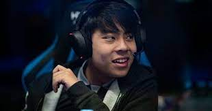
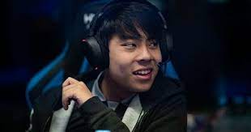

Anathan Pham (born 26 October 1999), better known as ana, is an Australian professional Dota 2 player. As a member of OG, he has played in three iterations of The International, winning in 2018 and 2019, and has also won two Major championships tournaments.[1][2] Career Early career Pham was born in Melbourne, Australia on 26 October 1999.[3] An avid Dota 2 player, he often played 10+ hours a day to the point where it started to impact his education.[4] In 2016, Pham was offered a position in Invictus Gaming's in-house league. This necessitated moving to Shanghai. To pursue the opportunity, Pham dropped out of high school at age 16 and moved to Shanghai. Pham began his professional Dota 2 career by joining Invictus Gaming in March 2016 as a substitute for Ferrari_430. His most notable accomplishment with the team was defeating Newbee in the grand finals of NEA 2016.[5] Move to OG Following The International 2016, Pham left the team to join OG. In November, he won his first ever tournament with OG at Elimination Mode Season 2 and later won his first major event by defeating Ad Finem 3–1 in the grand finals of Boston Major.[6] The team's performance continued to stay consistent with additional top 4 performances at Dota Pit League Season 5, StarLadder i-League StarSeries Season 3, and Dota 2 Asia Championships 2017. Pham would then take his second major at Kiev Major, and the team was invited for The International 2017.[7] During The International 2017, OG underperformed expectation, finishing at 7-8th position, falling at the hands of LGD Gaming.[8] Following their loss, Pham announced that he would be taking a break from the professional scene.[9] In early 2018 he joined the short-lived Echo International.[10] The International victories 2018 In 2018, months prior to The International 2018, OG's co-founder Fly left alongside s4, leaving OG struggling to fill their roster as all high level players had already signed for the upcoming competition. Pham thus re-joined OG alongside an unproven newbie Topson. With Topson being a solo middle specialist, Pham moved onto the hard carry role.[11] Despite a bad start at The International 2018's group stage, OG finished fourth and were seeded into the upper bracket of the main event. Considered underdogs during their entire time at the event, OG and Pham advanced to the grand finals and won the tournament by defeating PSG.LGD in the best-of-five series 3–2.[12][13] OG's win was characterised by some commentators as a Cinderella story[14] and "one of the greatest underdog stories ever; not just in esports, but in all competitive pursuits".[15] Following the victory, Pham decided to take a break from professional Dota 2.[16] 2019–2021 He returned to the team in March 2019.[17] Later that year, Pham won The International 2019, making him and the rest of the team the first repeat winners of The International.[18] The commentators noted that Pham developed a completely novel carry Io strategy, which was previously considered to not be viable, which he utilised to great effect.[19][20] Pham announced another hiatus from the team following the victory.[21] He returned to the active roster in April 2021.[22] Retirement After two months with the team, Pham announced his retirement from competitive Dota in June 2021.[23][24]